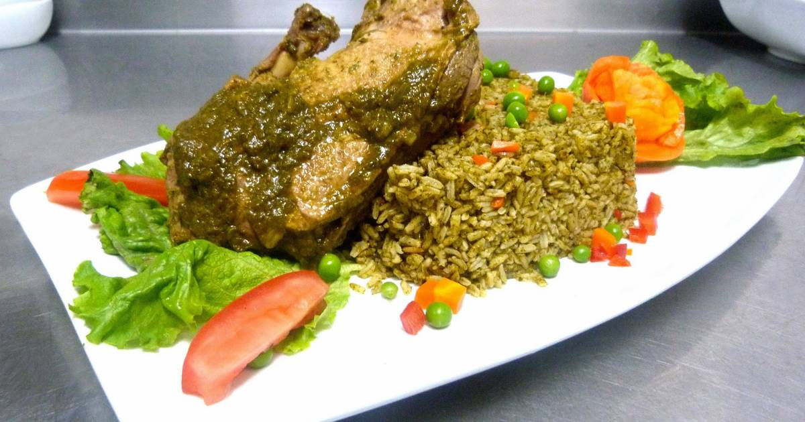

Arroz con Pato

Description
TThis incredibly flavored green rice is one of the most famous dishes in Chiclayo, north of Lima. Cooks in this region use the rice harvested in local farms, fragrant cilantro leaves -never the stems-, peas, and a well fed female duck, to make this legendary entree.
Ancient Peruvians were very fond of native ducks, and they loved to prepare several dishes with these tasty birds. With the arrival of rice, onions, and cilantro to our country, this recipe was created. Arroz con pato is the perfect fusion of foreign and native ingredients, and it has been raising many foodie’s hearts for quite a long time.
Of course, there are hundreds of variations. Some cooks, like myself, add beer to the stock because it gives the finished dish a unique depth of flavor. Others make it not so green, or cook it risotto-style. Believe me, every single version of it is to die for.
Ingredients
- 4 duck legs and thighs
- 2 cans beer
- 1/2 cup vegetable oil
- 1 cup red onion, chopped
- 4 garlic cloves, chopped
- 1/2 cup aji mirasol paste
- 1 teaspoon ground turmeric
- 1 teaspoon ground cumin
- 1 cup cilantro leaves
- 8 cups duck stock
- salt and pepper
- 3 cups long grain white rice
- 1 red bell pepper, diced
- 1 cup green peas
- Salsa Criolla
Steps
- Combine duck legs with a can of beer in a bowl, cover and refrigerate for at least 8 hours. Take the legs out of the marinade before cooking and dry the pieces with paper towels.
- In a saucepan, heat the oil over medium heat, add the duck, and sear until golden. Transfer to a plate, cover the pieces, and keep warm. In the same pan, add the chopped onion and garlic, cooking for 10 minutes over medium heat. Add ají mirasol, turmeric, and cumin, stir and cook for 10 more minutes.
- In the meantime, process cilantro and spinach leaves in a blender, with ½ cup water until very smooth. Add to the saucepan, together with the duck stock, the other beer, and the reserved seared duck. Season with salt and pepper, cover tightly, turn the heat to low and cook for 1 ½ hours or until the duck is loosening from the bone. Taste for seasoning. Transfer to a bowl with some of the liquid.
- Measure the liquid in the pan. You will need 4 ½ cups of this green and flavorful stock to cook the rice. Add the rice to the saucepan, along with the cooking stock, bell pepper, and green peas. Put the lid on, lower the heat, and cook for 20 minutes. Turn off the heat, and after 5 minutes, stir the rice with a fork.
- Serve the rice with a piece of duck on top, and salsa criolla on the side.